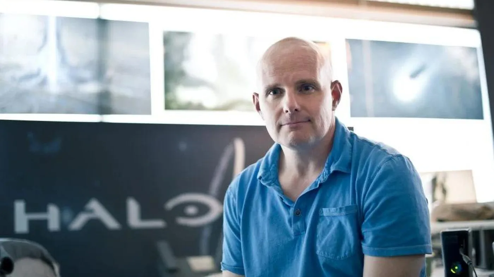

← Volver a Noticias

Star Wars: Battlefront 3 podría estar en la mira de Bungie y DICE
Luiso · 21 de octubre de 2026 · 3 min de lectura
Luiso · 21 de octubre de 2026 · 3 min de lectura
La posibilidad de que Star Wars: Battlefront tenga una tercera entrega volvió a generar conversación entre los jugadores. Según un rumor recogido en una edición retrospectiva de Electronic Gaming Monthly (EGM), DICE y Bungie estarían interesadas en presentar propuestas para desarrollar un nuevo juego de la saga. La información no proviene de un anuncio oficial de Lucasfilm, Electronic Arts ni de los estudios involucrados, por lo que debe tomarse con cautela.
El reporte apareció en una columna de rumores firmada por el personaje conocido como “Quartermann”, una sección tradicional de EGM que reunía comentarios y versiones de la industria. La edición forma parte de un proyecto retrospectivo impulsado por antiguos integrantes de la revista. Según la columna, Lucasfilm habría estado buscando posibles socios de desarrollo para continuar la serie, mientras que DICE sería una de las candidatas más previsibles por su trabajo anterior con la franquicia. El texto también menciona a Bungie como otra posible interesada.
La diferencia entre una intención de presentar una propuesta y un proyecto aprobado es fundamental. No hay confirmación de que Battlefront 3 esté oficialmente en desarrollo, ni de que Disney o Lucasfilm hayan seleccionado a alguno de los dos estudios. Tampoco se conocen detalles sobre plataformas, fecha de lanzamiento, modos de juego o el estado de las supuestas negociaciones.
DICE, el estudio de Electronic Arts responsable de Battlefield, desarrolló las dos entregas modernas de Star Wars: Battlefront. La primera llegó en 2015 y su continuación, Star Wars: Battlefront II, se lanzó en 2017. Ambos títulos apostaron por combates multijugador a gran escala ambientados en distintas épocas de la saga galáctica, con escenarios, vehículos y personajes reconocibles.
Sin embargo, Battlefront II tuvo un lanzamiento especialmente conflictivo debido a su sistema de cajas de botín y progresión, que recibió fuertes críticas por el peso de las microtransacciones y la forma en que condicionaban el desbloqueo de héroes. El sistema fue modificado tras la reacción pública, y con el tiempo el juego consiguió recuperar parte de su reputación entre la comunidad. Aun así, nunca se anunció una tercera entrega de la serie.
Que DICE vuelva a aparecer vinculada a un posible proyecto no resulta extraño, dado su historial con la franquicia. Pero cualquier nueva propuesta tendría que responder a las expectativas actuales de los jugadores y a las lecciones que dejó el lanzamiento de Battlefront II, especialmente en lo relacionado con la progresión, la monetización y el soporte posterior.
La otra posibilidad mencionada en el rumor es Bungie, el estudio conocido por Halo, Destiny y Marathon. Su experiencia en juegos de disparos y en experiencias multijugador de largo recorrido podría convertirlo en una alternativa interesante para una nueva entrega de Battlefront. Sin embargo, su participación no está confirmada y la información disponible no detalla qué tipo de propuesta podría presentar ni si el estudio tendría capacidad para asumir un proyecto de esta escala.
La eventual participación de Bungie también plantearía preguntas sobre el enfoque del juego: desde la estructura de sus modos multijugador hasta la forma en que se organizaría el contenido posterior al lanzamiento. Pero por ahora esas cuestiones son especulativas; no hay información fiable que permita atribuirle características concretas a un hipotético Battlefront 3.
Por el momento, el rumor sirve como indicio de que podría existir interés en reactivar una franquicia que lleva casi nueve años sin una nueva entrega principal. Hasta que Lucasfilm, Disney, Electronic Arts, DICE o Bungie se pronuncien, lo prudente es hablar de posibles candidatos y no de un anuncio inminente.
 21 de octubre de 2026
21 de octubre de 2026
Después de más de una década sin nuevas entregas, EA Sports confirmó que Fight Night volverá. El anuncio llegó mediante las redes sociales oficiales de la franquicia, aunque la compañía todavía no reveló el título definitivo, las plataformas, la fecha de lanzamiento ni detalles sobre su desarrollo. El regreso marcaría el retorno de una de las series de boxeo más reconocidas de los videojuegos.
 8 de octubre de 2026
8 de octubre de 2026
Más de tres décadas después de vender Origin Systems a Electronic Arts, Richard Garriott está a punto de recuperar el control sobre los derechos de Ultima. El creador ya notificó a EA que ejercerá un mecanismo previsto por la legislación estadounidense y asegura que las conversaciones entre ambas partes continúan.

30 de septiembre de 2026Con Halo ahora bajo la responsabilidad de Activision, Frank O'Connor, quien trabajó durante casi dos décadas en la franquicia, compartió varias posibilidades para su futuro. Entre sus recomendaciones está recuperar a veteranos despedidos de Bungie y Halo Studios y mantener uno de los elementos que considera fundamentales para la identidad de la saga: su sandbox.
Cargando comentarios…